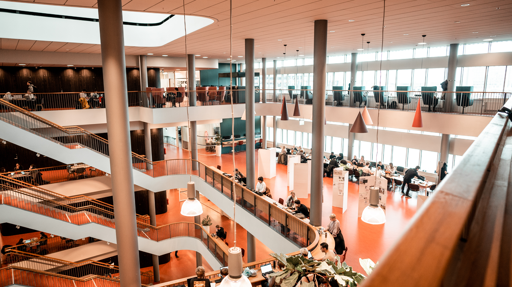
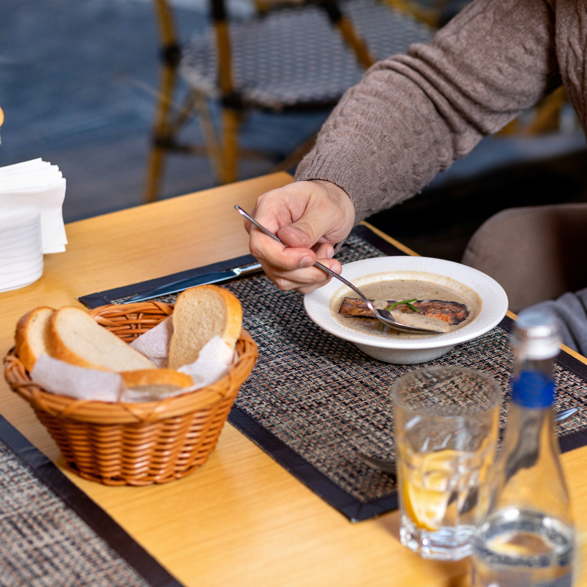

Programmet"PM"
På Malmö universitet finns det olika sätt att socialisera sig samt träffa nya vänner. Vår studentkår erbjuder en variation av evenemang, exempelvis barrundor, beerpongturneringar, nattklubbsliv och mycket mera. Utöver våra egna evenemang så kan studenter på Malmö Universitet även utforska Lunds studentliv. Genom att ansöka för ett nationskort så kan du som elev gå på nattklubbar och sammankomster i både Lund och Malmö, perfekt visst? Så vänta inte! Sök Produktionsledare för att ta del av det sociala umgänget.
Musik Pub

Tillsammans med Festmesteriet bjuder vi på en härlig pubkväll där vi bjuder in lokala band och artister som underhåller oss med livemusik! Ta med dina vänner, studenter och icke-studenter, och upptäck ny musik i en miljö där baren har studentvänliga priser och alla är välkomna! Puben öppnar 19.00, Det första bandet spelar kl 20:00. Evenemanget är öppet för alla *! Gratis inträde! Åldersgräns: 18 år. Ett giltigt ID krävs. Plats: Studentpub, Bassängkajen 8, Malmö. *Om du inte är medlem i Unionen kan du skriva upp dig på en lista i entrén.
Fika med Unionen

Fika med facket – vi ses på din fakultet! (Om det finns restriktioner från Folkhälsomyndigheten hålls det i Kølsvinet istället) Fika med Kåren anordnas en gång i månaden på varje fakultet. Då kommer Studentkåren ut till er fakultet för att träffa er studenter. Ditt studentombud finns där och du har chansen att berätta vad du tycker behöver förbättras på universitetet. Eventet kan se lite olika ut från månad till månad. Ibland har vi ett speciellt tema som vi fokuserar på, kanske ber vi dig svara på frågor i en enkät, ibland har vi något intressant sällskap med oss, och vi ger alltid Unionens medlemmar gratis kaffe!
Studentfrukost
Att frukosten är dagens viktigaste mål är välkänt, men som student är det inte alltid man har råd med en stor frukost. Speciellt inte dagarna innan CSN då plånboken är lika stor som kylskåpet. För att hjälpa till att bota magar som mullrar över föreläsningarna serverar Unionen Studentfrukost varje tisdag innan CSN betalas ut! För endast 20 kr kan du som medlem njuta av en frukostbuffé med klassiskt innehåll som smörgåsar, kallskuret, yoghurt, musli, ägg, juice och så klart rykande färskt kaffe! Dessutom har vi våffelbuffé med tillbehör. Frukost serveras mellan 9:00 och 11:00, men dyk upp i tid för att vara säker på att bli mätt!
Sopplunch med kåren
Som student är det inte ofta man har pengar över för att unna sig en lunch ute, så varje onsdag anordnar Unionen en sopplunch i Kolsvinet som du garanterat har råd med! För endast 15kr får du som medlem i Studentkåren Malmö vegetarisksoppa inkl. bröd och kaffe. Soppan som serveras är gjord från närodlade grönsaker och det finns alternativ för både vegetarianer och för elever med specialkost. Soppan vi serverar är av högsta klass och vi garanerar därför att du inte kommer bli besviken! Priset på soppan är skapat utifrån förutsättningarna att våra kunder lever i ett studentliv, därav det låga priset.